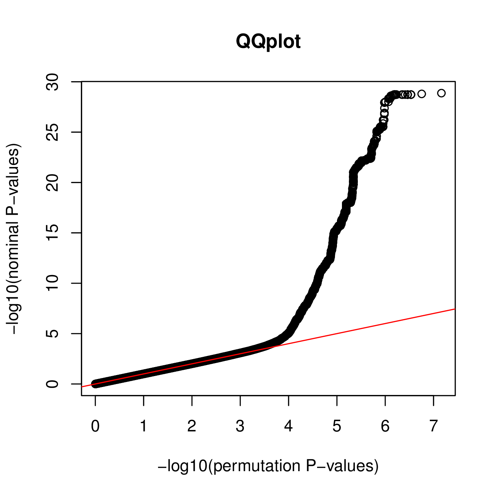

How to run a full pass in trans?
In a full analysis in trans, you need to run separately the nominal pass and the permutation passes. To illustrate this, first download the example data below and go through the two steps; 1. nominal pass and 2. permutation pass.
- The phenotype data matrix for chr22 on 358 samples (simulated data): BED / index
- The genotype data matrix for chr22 on 358 samples: BED / index
Step1: Run a nominal pass
To do so, run:
QTLtools trans --vcf genotypes.chr22.vcf.gz --bed genes.simulated.chr22.bed.gz --nominal --threshold 1e-5 --out trans.nominal
This computes all pairwise test between variants and phenotypes (excluding those in cis) and reports the results in 3 output files:
- trans.nominal.best.txt.gz; contains the top hit per phenotype
- trans.nominal.bins.txt.gz; contains a binning of all hits with a P-value below the specified --threshold (=1e-5)
- trans.nominal.hits.txt.gz; contains detailed information (not binned) for all hits with a P-value above the specified --threshold (=1e-5)
These files are detailed below:
zcat trans.nominal.best.txt.gz | head
ENSG00000215270.3 -1 1.12926e-05
ENSG00000237438.2 -1 2.03908e-05
ENSG00000273203.1 -1 0.000215518
ENSG00000273442.1 -1 1.64291e-05
ENSG00000177663.9 -1 3.32289e-05
ENSG00000183307.3 -1 5.1272e-06
ENSG00000069998.8 -1 3.91133e-06
ENSG00000093072.11 -1 1.82101e-06
ENSG00000099954.14 -1 4.99988e-07
ENSG00000182902.9 -1 9.67087e-06
- 1. Phenotype ID
- 2. Dummy here. Field used in approximated mapping in trans
- 3. Nominal P-value of the top hit per phenotype
zcat trans.nominal.bins.txt.gz | head
0 0 0.000231095 1 0.996523 129237
1 0.000231095 0.000462191 0.996523 0.993047 130402
2 0.000462191 0.000693286 0.993047 0.989571 131480
3 0.000693286 0.000924382 0.989571 0.986094 130623
4 0.000924382 0.00115548 0.986094 0.982619 128835
5 0.00115548 0.00138657 0.982619 0.979143 129555
6 0.00138657 0.00161767 0.979143 0.975668 131499
7 0.00161767 0.00184876 0.975668 0.972193 130907
8 0.00184876 0.00207986 0.972193 0.968719 131048
9 0.00207986 0.00231095 0.968719 0.965245 129206
- 1. Index of the bin
- 2-3. Dummy fields
- 4-5. Upper and lower boundaries of the P-value bin
- 6. Number of tests falling in this bin
zcat trans.nominal.hits.txt.gz | head
ENSG00000100154.10 chr22 29075853 22_16367079 chr22 16367079 5.25462e-08 -1 0.282742
ENSG00000188064.5 chr22 46373009 22_16505849 chr22 16505849 5.21154e-07 -1 0.261513
ENSG00000211685.2 chr22 23264766 22_16519289 chr22 16519289 4.62478e-07 -1 0.262665
ENSG00000217442.3 chr22 51001334 22_16542420 chr22 16542420 9.67611e-06 -1 0.231457
ENSG00000254413.4 chr22 51021394 22_16935663 chr22 16935663 6.40882e-06 -1 -0.235939
ENSG00000211642.2 chr22 22569184 22_16965224 chr22 16965224 8.49673e-06 -1 0.232881
ENSG00000211642.2 chr22 22569184 22_16965490 chr22 16965490 8.49673e-06 -1 0.232881
ENSG00000211642.2 chr22 22569184 22_16967698 chr22 16967698 1.7548e-07 -1 0.271811
ENSG00000211685.2 chr22 23264766 22_17043332 chr22 17043332 3.24499e-07 -1 0.266049
ENSG00000100228.8 chr22 23487513 22_17043332 chr22 17043332 9.56054e-06 -1 0.231589
- 1. Phenotype ID
- 2. Phenotype chrID
- 3. Phenotype start
- 4. Variant ID
- 5. Variant chrID
- 6. Variant position
- 7. Nominal P-value of association
- 8. Dummy here. Field used in approximated mapping in trans
- 9. Regression slope
This trans nominal pass can be tuned using the following options:
- --threshold [float]: this defines the threshold to bin (in *.bins.txt.gz files) or report (in *.hits.txt.gz) nominal P-values. Default is 1e-5.
- --normal: this enforce the phenotypes to be normally distributed
- --window [int]: this defines the cis-window of variants to be excluded from the analysis (default is 5000000)
- --bins [int]: this defines the number of bins to be used for binning P-values above --threshold (default is 1000)
Step2: Run a permutation pass
The permutation pass is relatively similar to the nominal one. For a single permutation, run:
QTLtools trans --vcf genotypes.chr22.vcf.gz --bed genes.simulated.chr22.bed.gz --threshold 1e-5 --permute --out trans.perm123 --seed 123
This command permutes all the phenotypes in a similar way so that correlation between phenotypes is unchanged. All pairwise tests between variants and phenotypes are then computed (excluding the cis-window) and reported in the same 3 files than for the nominal pass: trans.perm123.best.txt.gz, trans.perm123.bins.txt.gz and trans.perm123.hits.txt.gz.
If you wish to run 20 permutations on 4 threads, you can proceed as follows:
for p in $(seq 1 20); do
echo "trans --vcf genotypes.chr22.vcf.gz --bed genes.simulated.chr22.bed.gz --permute --out trans.perm$p --seed $p";
done | xargs -P4 -n10 QTLtools
Produce a QQplot from a nominal and a permutation pass
To do so, you can use (and modify to fit your needs) the example script script/plotTrans.R provided with QTLtools as follows:
Rscript ~/script/plotTrans.R QQplot.pdf trans.nominal.hits.txt.gz trans.nominal.bins.txt.gz trans.perm123.hits.txt.gz trans.perm123.bins.txt.gz
For the nominal and paermutation passes you went through, you should get something like this:
Estimate FDR for each nominal hit
To do so, you can use (and modify to fit your needs) the example script script/runFdrTrans.R provided with QTLtools as follows:
Rscript ~/script/runFDR_ftrans.R trans.nominal.hits.txt.gz trans.perm123.hits.txt.gz output.txt
As an output, you get a file output.txt which contains the data in trans.nominal.hits.txt.gz with an additional column that gives the FDR estimate for each hit. This value is obtained for each hit by counting the number of permutation hits with a smaller P-values; number divided by its rank. In other words, the permutation outcome is used to estimate how many smaller P-values are obtained when drawing from the null.